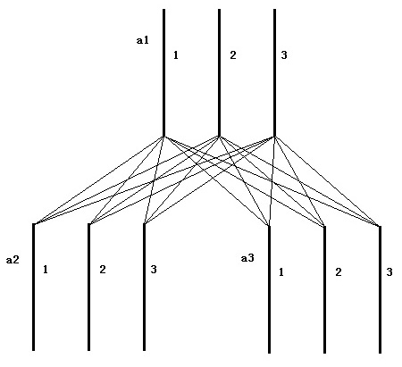

Allison有非常多的电子设备，比如iMac,iPod,iPhone和iPad。所以她准备购买插线板来给电子设备充电。在做了大量的网络调研后，
Allison拔线了一款美丽精巧的天翼牌排插（如左下图所示）。在见到这个插线板的第一眼，Allison就被它的境美造型所吸引，
于是她一次性购买了n个这种型号的插线板。
可是问题也随之而来，Allison的家中只有一个插座，她需要通过插线板的连接将电一层一层地导出（如右上图所示）。
插线板的连接方式是树形结构的：每个插线板的插头插在另一个插线板的插空中（除了根节点），插线板的连接不允许构成环。
每个插线板有火线，零线，地线三根导线，随着插线板数量的增加、倒显得磨损，电路中导线与导线之间接触产生的电阻已经到了
不能被忽视的地步。
如何来描述插线板的树形结构以及导线之间的电阻关系呢？Allison思考出来一个数学模型：用ai代表第i个插线板的编号，fi代表
第i个插线板的插头所差的插线板（即ai在树中的父亲），1代表火线，2代表零线，3代表地线，则整个网络的电阻可以用
R(ai,fi,x,y)(x,y∈{1,2,3})来描述，它代表ai的x线与fi的y线之间的电阻值（在这个数学模型中，Allison认为火线和领先也是
可能连接并且产生电阻的）下面是一个例子：

由于时间的推移，导线与导线之间的电阻还可能发生变化。现在，Allison想知道在插线板树形电路中，当前时刻ai插线板的x线和
aj插线板的y线之间的电阻式多少。规定插线板的树根节点不再插向其他插线板，且编号为1。